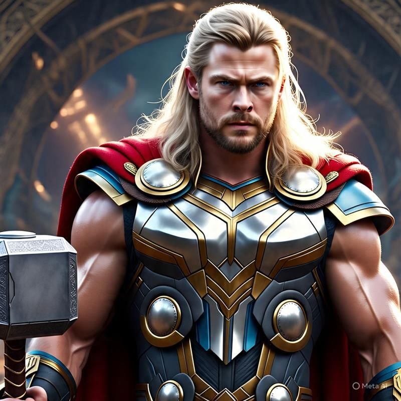

Thor

Bio
- Full Name: Thor Odinson
- Place of Birth: Asgard
- Alignment: Good
- Gender: Male
- Race: Asgardian
Abilities
Intelligence
Strength
Speed
Durability
Power
Combat
If I had a Hammer
Thor grew into a mighty warrior and protector of his home and people. Thought to be rash and even reckless by his father, Thor nevertheless looked forward to the day of his ascension to the throne...
Alone and unable to return to Asgard, Thor met scientists Jane Foster and Erik Selvig... Thor sacrificed himself to save the town from destruction and impressed Odin enough to restore him to full Asgardian power.